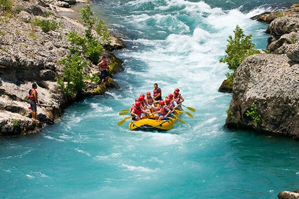
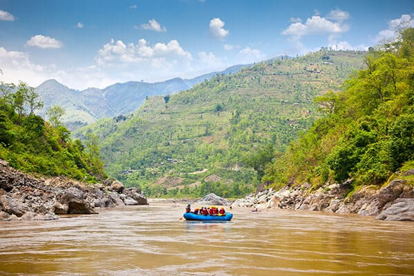
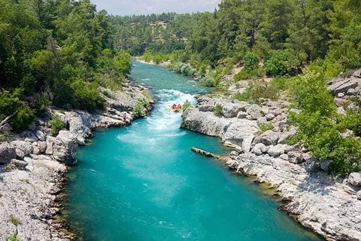

Nossa missão é conectar pessoas à natureza por meio de experiências seguras, emocionantes e inesquecíveis. Valorizamos aventura, respeito ao rio e atendimento acolhedor.


Nossa missão é conectar pessoas à natureza por meio de experiências seguras, emocionantes e inesquecíveis. Valorizamos aventura, respeito ao rio e atendimento acolhedor.
A Rio Abaixo Rafting começou como um pequeno grupo de apaixonados por rios e esportes ao ar livre. Com o tempo, reunimos guias qualificados, aprimoramos nossos equipamentos e construímos uma reputação baseada em segurança e diversão.

Hoje oferecemos passeios para iniciantes e aventureiros experientes, sempre com foco em segurança, contato com a natureza e momentos inesquecíveis para nossos clientes.



